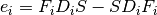
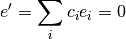
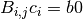
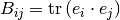
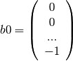
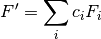

DIIS¶
Direct Inversion in the Iterative Subspace (DIIS). Makes new F’ guesses bassed on previous guesses.
The error vector in DIIS is given as:

It is wanted that the sum of error vectors is zero:

And now with the requirement that the sum of all c is zero, the following matrix eqution is solwed:

Here:

and,

Finally the new F’ is constructed as:

FUNCTION:
- DIIS.DIIS(F,D,S,Efock,Edens,basis,numbF)
- return Fprime, Efock, Edens, Emax
Input:
- F, Fock matrix
- D, Density matrix
- S, overlap matrix
- Efock, saved fock matrices
- Edens, saved density matrices
- basis, basis set
- numbF, number of matrixes to save
Output:
- Fprime, F’ guess
- Efock, saved fock matrices
- Edens, saved density matrices
- Emax, Maximum error in error vector
References:
- http://sirius.chem.vt.edu/wiki/doku.php?id=crawdad:programming:project8
- Pulay, Chem. Phys. Lett. 73, 393 (1980).